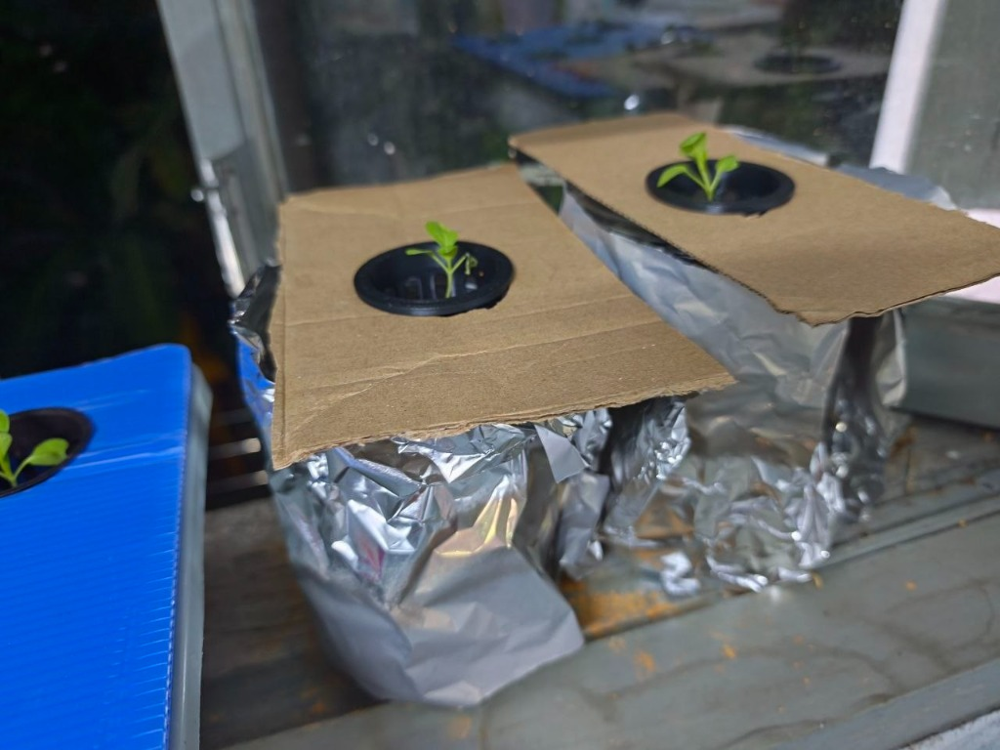
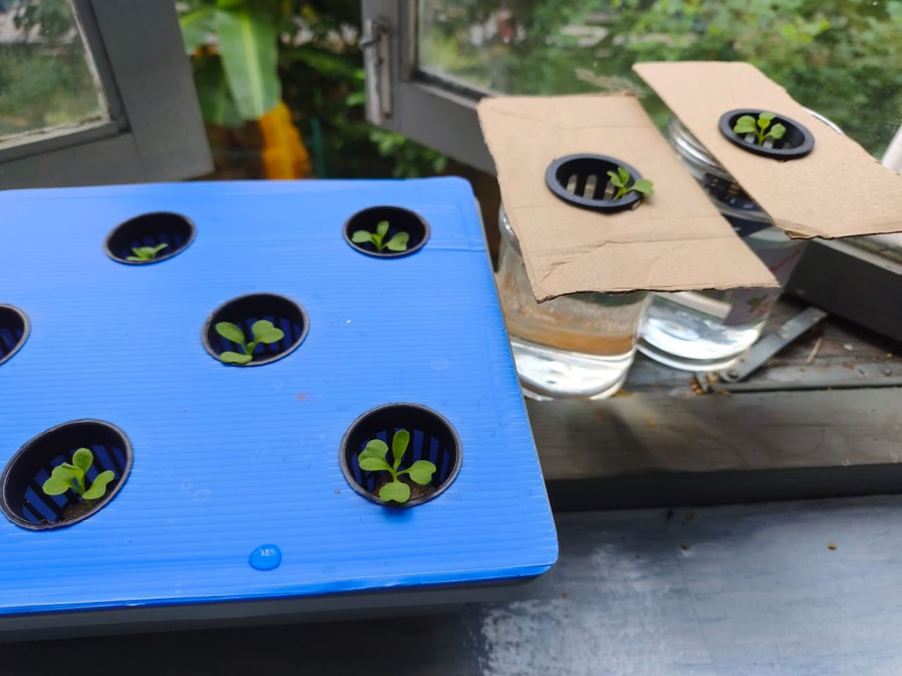
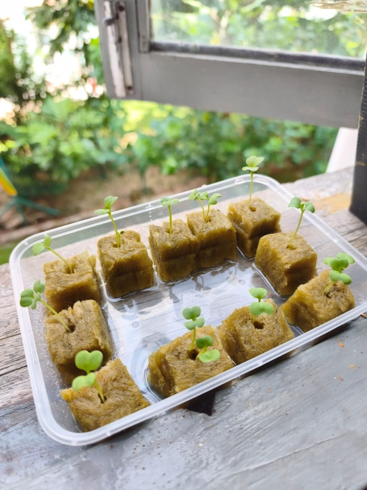
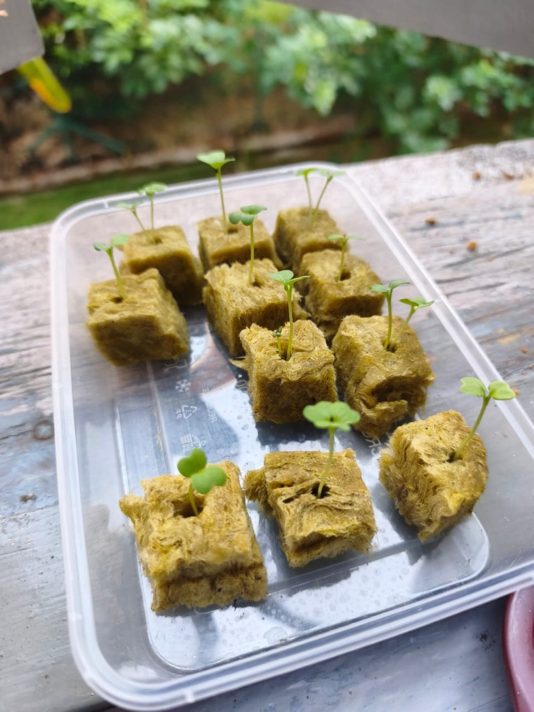
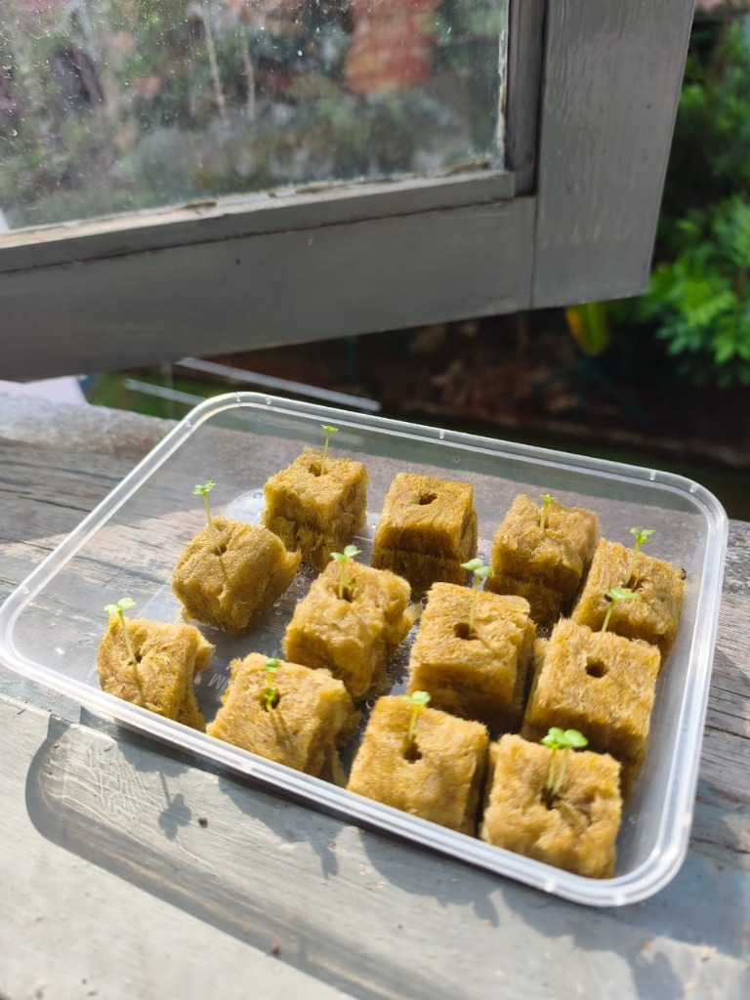
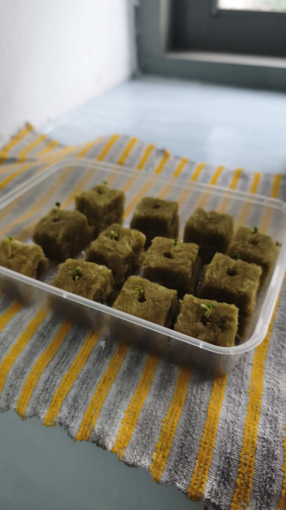
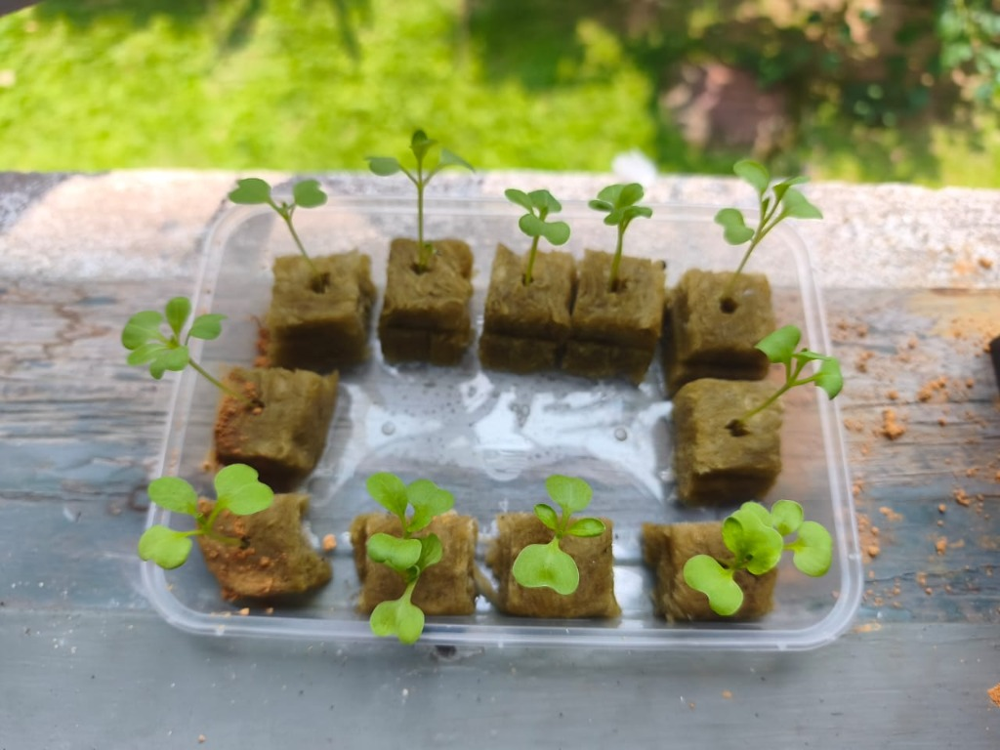
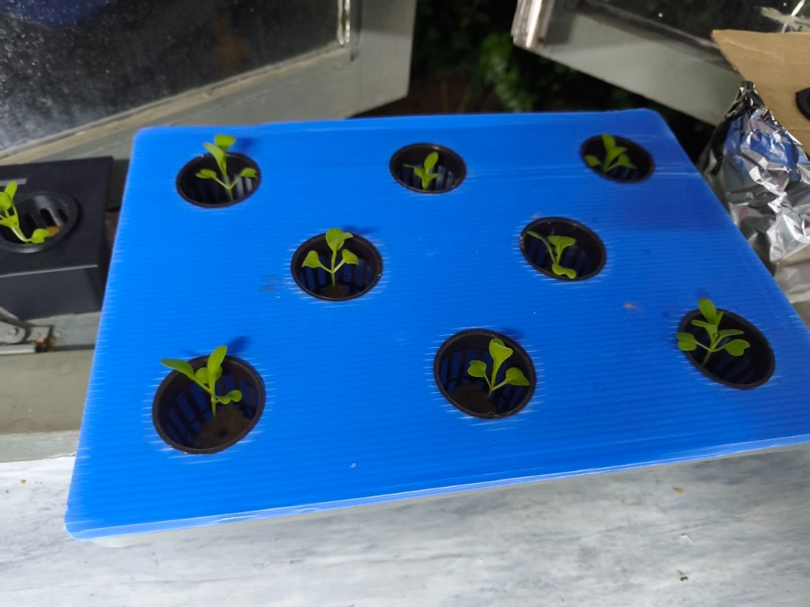

Kaedah Kratky (Hidroponik Pasif Tanpa Pam & Elektrik) Menggunakan Alatan Sedia Ada
Pencapaian cemerlang pada Hari Ke-13! Cadangan pencegahan lumut telah disempurnakan dengan amat kemas dan saintifik — kedua-dua balang kaca kini siap dibalut sepenuhnya dengan aluminium foil dan penutup kadbod tersuai. Kesemua 11 anak pokok Pak Choy (8 unit dalam takung biru 3L, 1 unit dalam bekas hitam, dan 2 unit dalam balang kaca) menyesuaikan diri dengan cemerlang tanpa sebarang simptom kejutan pemindahan (transplant shock). Pokok berdiri tegak, daun hijau segar berkilat, dan bersedia memasuki fasa pembesaran daun secara pesat!
Aluminium foil memantulkan haba dan menyekat 100% cahaya daripada menembusi larutan baja balang. Tiada pembiakan lumut hijau (algae) yang boleh merebut baja dan oksigen anak pokok!
Jangan tambah air takung buat masa ini! Biarkan paras air menyusut 1–2 cm dalam beberapa hari ini supaya ruang udara (air gap) terbentuk untuk respirasi akar oksigen kaedah Kratky.
Cahaya pagi 7:30 – 11:30 pagi sangat mencukupi untuk fotosintesis daun ke-3 dan ke-4 tanpa menyebabkan larutan baja takung menjadi panas berlebihan.
Pastikan penutup kadbod dan coroplast rapat di sekeliling mulut takung/balang agar nyamuk tidak dapat masuk dan bertelur di dalam larutan baja hidroponik.
Rekod visual & diagnosis AI pintar mengikut perkembangan harian semaian anda

Hari Ke-13 • Balang Kaca Dibalut Aluminium Foil & Penutup Kadbod (Kalis Lumut 100%)Syabas atas tindakan yang pantas dan tepat! Pada Hari Ke-13, anda telah menyempurnakan langkah kritikal dengan membalut kedua-dua balang kaca menggunakan aluminium foil dan penutup kadbod tebal. Ini menghalang penembusan cahaya matahari 100% ke dalam air baja AB, sekali gus melumpuhkan risiko pertumbuhan lumut hijau (algae) yang biasanya mencuri baja serta oksigen akar.
Perhatikan kesemua 11 anak pokok di ketiga-tiga unit takung: tiada sebarang tanda 'transplant shock' (kejutan pemindahan)! Anak pokok tidak layu, daun kotiledon kekal hijau cerah, dan daun sejati ke-3 serta ke-4 mula mekar melebar. Ini membuktikan formulasi baja takung (~944–966 µS/cm) dan paras air yang disediakan sangat serasi dengan sistem akar anak pokok!

Hari Ke-12 • Semua Pindah Ke Takung Kratky (Takung 3L, Bekas Hitam & Balang)Tahniah atas penjagaan yang konsisten! Pada Hari Ke-11, anak pokok Pak Choy anda telah melangkah masuk ke fasa vegetatif awal dengan jayanya. Daun sejati (true leaves) kini sudah mencapai 3 hingga 4 helai dengan urat daun yang jelas dan tepi berombak sihat. Ketinggian pokok stabil sekitar 5.5 – 7.5 cm dan batang tidak membengkok lemah. Akar-akar putih aktif mula kelihatan menjalar di dasar kiub rockwool menyerap air baja. Ini adalah indikator terbaik bahawa anak benih sudah cukup kuat untuk dipindahkan ke sistem takung hidroponik Kratky dalam 1 hingga 3 hari akan datang!

Hari Ke-7 • Mula Baja AB (432 µS/cm) & Daun Sebenar KembangVisual Hari Ke-7 menunjukkan transformasi yang mengagumkan! Anak pokok berdiri tegap dengan ketinggian purata 4.0 – 5.5 cm. Pucuk daun sejati (true leaf) pertama dan kedua kini semakin melebar di tengah roset cotyledon. Penyusunan kiub rockwool dalam bekas lutsinar dengan lapisan larutan baja AB cetek (paras 1–2mm) di dasar adalah langkah bottom feeding yang sangat tepat — kiub rockwool kekal lembap menyerap nutrien tanpa melemaskan zon perakaran atas.

Hari Ke-6 • Daun Sebenar Mula MunculTahniah! Pokok anda kini berjaya memasuki fasa transisi vegetatif. Di bahagian tengah antara dua daun lembaga berbentuk hati, pucuk daun sejati (true leaf) yang pertama telah mula membesar dengan corak tepi yang khas. Batang pokok membesar dengan padat, berjarak ruas pendek, membuktikan ia mendapat kuantiti cahaya matahari pagi yang sangat seimbang tanpa sebarang masalah etiolasi (melidi).

Hari Ke-4 • Tepi TingkapAnak pokok anda melepasi fasa percambahan dengan sangat memuaskan. Langkah meletakkannya di tepi tingkap berjemur cahaya pagi secara langsung berjaya menyekat etiolasi (pokok melidi) dan membolehkan klorofil aktif bekerja.

Hari Ke-3 • Mula Pecah BenihTitik-titik tunas hijau halus (sekitar 2–5 mm) baru mula menembusi permukaan lubang kiub rockwool. Biji benih bertindak balas dengan baik terhadap kelembapan media semaian. Daun kotiledon masih kuncup rapat. Pendedahan terus ke kawasan bercahaya pada saat ini adalah kunci utama kejayaan semaian!
Tunas kuncup halus baru menjenguk (~0.3 cm). Daun lembaga masih kuncup rapat dalam lubang kiub rockwool.
Tumbesaran melompat kepada ~2.0 cm. Daun lembaga terbuka lebar menyerap matahari pagi di tepi tingkap.
Tinggi ~3.5 cm. Daun sejati (true leaf) mula memecah di tengah kotiledon. Batang tegap & bersedia terima baja AB.
Tinggi mencecah ~4.5 - 5.5 cm. Daun sejati melebar aktif. Pengenalan baja AB starter (432 µS/cm) secara rendaman dasar 1-2mm.

🌿 Hari Ke-11 (Daun #3 & #4 Mekar)Tinggi mencecah ~5.5 – 7.5 cm. Daun sejati ke-3 & ke-4 kembang mekar. Akar putih menembusi bawah rockwool; sedia untuk penjarangan dan pemindahan ke takung Kratky.

🛡️ Hari Ke-13 (Kratky Penuh & Foil Kalis Lumut)Semua 11 pokok selamat beradaptasi tanpa kejutan pindah. Balang kaca siap dibalut aluminium foil & kadbod kalis lumut; takung biru 8 pokok segar mekar memasuki fasa vegetatif pesat.
Penjarangan (1 pokok 1 net pot) selesai sepenuhnya tanpa sebarang kerosakan akar. Kesemua 11 pokok berjaya dipindahkan ke dalam takung hidroponik Kratky (takung biru 3L 944 µS/cm, bekas hitam 966 µS/cm, dan 2 balang kaca bertutup foil kalis lumut).
Status Terkini (Hari Ke-13): Pokok kini memasuki fasa pembesaran daun secara pesat dalam takung Kratky masing-masing. Daun sejati #3 dan #4 mula berkembang mekar.
Benih berkualiti tinggi, percambahan pantas 24–48 jam.
Media semaian pegang kelembapan & sokong akar.
Pati cecair siap guna khas untuk daun hijau tebal & batang rangup.
Ukur kepekatan garam mineral/baja dalam air.
Pastikan asid-alkali air tidak menyekat serapan nutrien.
Pemegang pokok & takungan larutan nutrien kedap cahaya.
Baja A & B cecair yang anda beli adalah formula sedia ada (ready-to-mix concentrate) yang sangat mesra pengguna kerana anda tidak perlu membancuh serbuk terlebih dahulu.
Panduan sukatan tepat, teknik bancuhan, dan kaedah rendaman dasar (bottom feeding) tanpa merosakkan akar halus
Untuk anak benih berumur 7–10 hari yang baru keluar daun sejati, gunakan bancuhan nipis (separuh dos):
Apabila anda mengukur larutan semaian dan mendapat bacaan 432:
Ketahui tanda fizikal pokok, fasa umur yang tepat, dan teknik 'Top Up' tanpa melemaskan akar udara
Naikkan kepekatan baja ke paras matang (1.4 – 1.8 mS/cm atau 1400 – 1800 µS/cm) apabila anda melihat 3 tanda utama ini:
Dalam kaedah Kratky, JANGAN curah pati baja pekat sesuka hati ke dalam takung setiap hari. Ikuti langkah selamat ini:
Pokok "makan" nutrien lebih pantas berbanding air. Boleh sediakan sedikit bancuhan baja baharu untuk kembalikan ke paras ~1,200 – 1,400 µS/cm.
Pada hari cuaca panas terik, pokok "minum" air dengan laju menyebabkan garam baja menjadi pekat. Cukup sekadar tambah air paip kosong tanpa baja.
Masukkan kapasiti air takungan anda untuk mengira anggaran sukatan stok pati Baja A & B yang diperlukan mengikut peringkat tumbuhan.